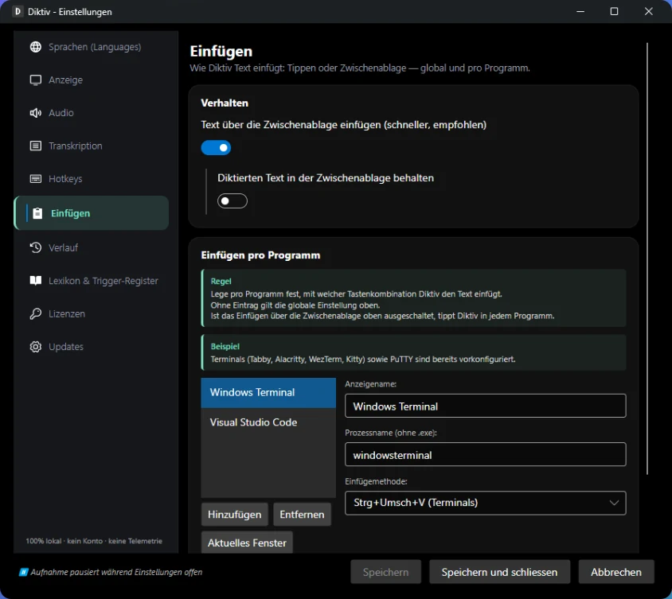
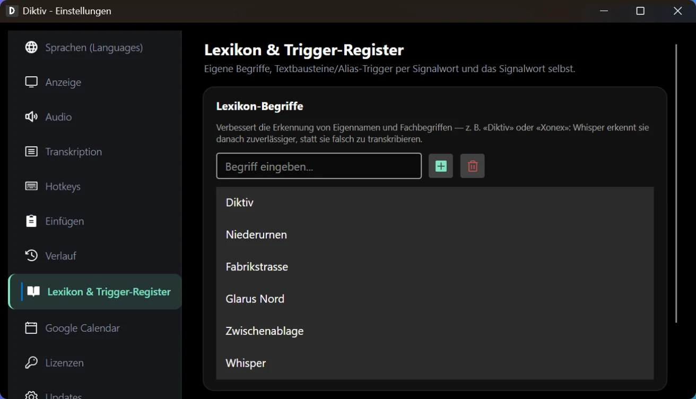
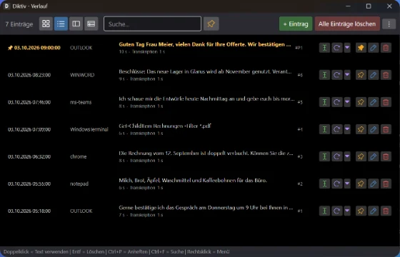
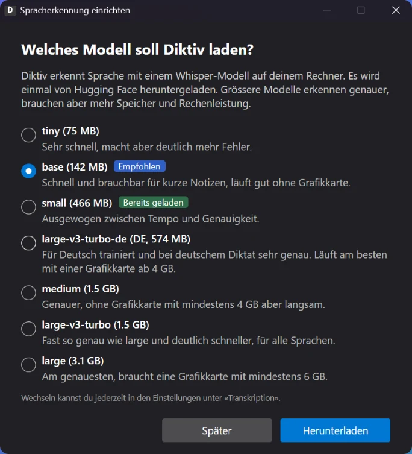
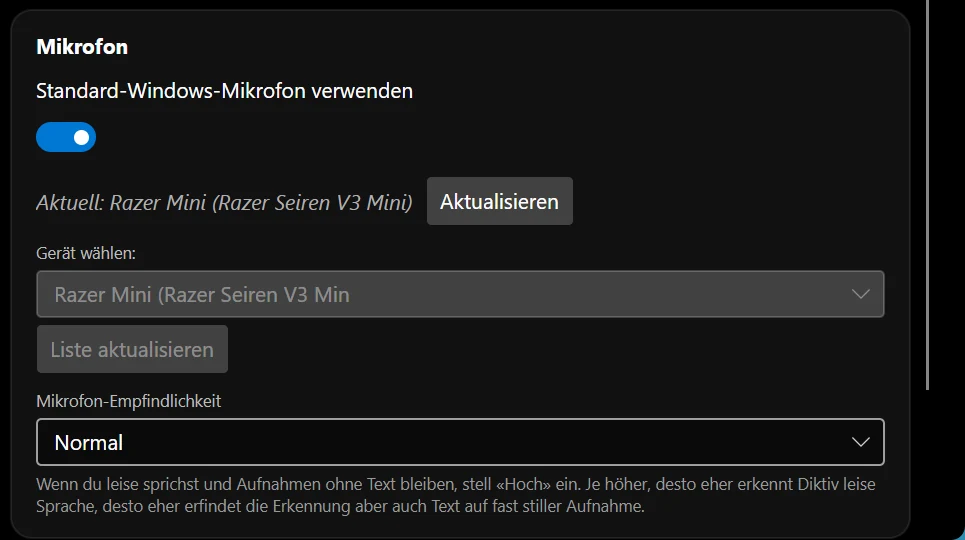

Diktiv is a dictation app for Windows. Everything on this page is part of the free version.
Hold a key, speak, release.
You hold down a key, speak and let go. Moments later the text is where your cursor is, in an email draft, a document or a chat window.
Dear Ms Meier, thank you for your quote. We confirm the appointment on Tuesday at 2 pm and look forward to working with you.
00:22
Stays on your computer
Whisper is built into the program. Your recordings are not sent to any server. There is no account and no telemetry.
Free
The free version costs nothing. These limits apply.
00:22
Up to 30 seconds per recording. The pill counts along.
60recordings per hour
10entries in the history
Lands where you started
The text goes into the window and input field where you started the recording. If you click somewhere else in the meantime, Diktiv brings that window back before pasting.
Hold Recording key
Speak and let go. The text lands where you started.
Hold Shift + §
The text goes into the window that is in front when you let go. This second key can be set freely.
Tap Recording key
Pastes the last dictated text again, into the window that is active right now.
Double tap Recording key
Opens the history with search.
Speak without holding the key
In tap mode you tap the recording key once and speak. Tapping again ends the recording. If you hold the key for 2 seconds or longer, it ends when you let go.
You turn on tap mode in the settings.
tap Recording key · speak · tap Recording key
Cancel with Esc or the cross
Press Esc or click the red cross on the pill to cancel a recording or its processing. Both do the same. You decide whether Diktiv then asks, discards the dictation or processes it anyway.
00:05
same as Esc
Pause listening
If you need the recording key for typing for a moment, click the microphone on the pill. Diktiv releases the key and the pill counts down the seconds.
By default Diktiv listens again after 5 seconds. You can set up to 10 seconds or turn the return off.
5.0s
Works in terminals too
Diktiv recognises terminals such as Windows Terminal or PuTTY and pastes the way they expect. This also works in Electron apps.
You can choose from four paste methods, separately for each app. If a program does not accept the clipboard, Diktiv types the text character by character.

Your names, spelled right
Add technical terms and names to the lexicon so Whisper spells them correctly.

Swiss spelling
For Swiss German texts, Diktiv writes ss instead of ß.
ss
History with search
Earlier dictations are in the history, and one click pastes the text again. There are four views to choose from, as tiles, as a list, split or as a table.
You can edit and pin entries. You export the history as a CSV file or import it again. The free version keeps the last 10 entries, and pinned ones do not count.

Quick Capture
A second key captures a thought. Diktiv saves it as a Markdown file in a folder of your choice.
.md
Nothing gets lost
If the window is gone when Diktiv pastes, the text goes to the clipboard. The pill then shows “On clipboard” and you paste it wherever you like.
Ctrl + V
Several dictations in a row
If you keep dictating while Diktiv is still working on the previous text, it queues the recordings and pastes them in order. The pill shows where you are.
1/2
German model built in
Built in is a version of Whisper large-v3-turbo trained on German. You can download six more models when you need them.

Faster with a graphics card
A graphics card makes recognition faster. You do not need one.
NVIDIAAMDIntel
Dictate in 100 languages
You can dictate in 100 languages, and Whisper can detect the language by itself. With several languages active, you switch on the pill, where a globe with the code shows the current one. This is separate from the language of the interface.
100
Interface in German and English
Menus and settings are available in German and English.
DE EN
Your microphone, even for quiet voices
Use the Windows default microphone or choose a specific device. Set the sensitivity to Normal, High or Very high so that quiet voices come through too.

The pill at the edge of your screen
A small pill shows whether Diktiv is listening. It never takes the focus away from the program you are writing in. Try the controls. They have the same names as in the app, on the Display tab of the settings.
You move it by dragging and change its width at the right edge. When idle it collapses to 40 × 40 pixels with just the microphone, and opens as soon as you hover over it. When you dictate it jumps below the mouse pointer, and if you switch screens it moves along. You can turn off collapsing, jumping and moving along one by one. If you like, it hides in full screen and only reappears when you dictate.
DETranscribing…00:2200:02
Sounds as feedback
Short sounds signal start, stop, success and error, so you hear what is happening without looking. You turn each of the seven sounds on or off individually and set the volume yourself.
7
Not in the clipboard history
By default, dictated text appears neither in the Windows clipboard history nor in the cloud clipboard. That way it does not end up on other devices. You can turn this off.
Windows + V shows no dictations
You decide how long the history stays
At first start you choose whether the history stays only until you quit Diktiv, for 30 days or for 90 days. It is stored locally on your computer and does not travel to other computers with a roaming profile.
until you quit30 days90 days
Listen again
If you like, Diktiv keeps the original recordings. You can then listen to any dictation in the history again, for example when a word was misrecognised. The recordings stay on your computer. This is off by default.
Text snippets by trigger word
Save frequent texts once as a snippet. When you say the trigger word and the name while dictating, Diktiv inserts the snippet. This works in any dictation.
“Snippet sign-off”
Errors without dialog boxes
If something goes wrong, the message appears right in the pill and no window pops up in front of your work. One click on Retry tries again.
Retry
Please note
Speech recognition makes mistakes, and so does Whisper. Read the text before you use it. Diktiv is not a medical device.
What you need
Windows 10 version 1809 or later, or Windows 11, and a microphone. A graphics card is not required.
 Diktiv
Diktiv